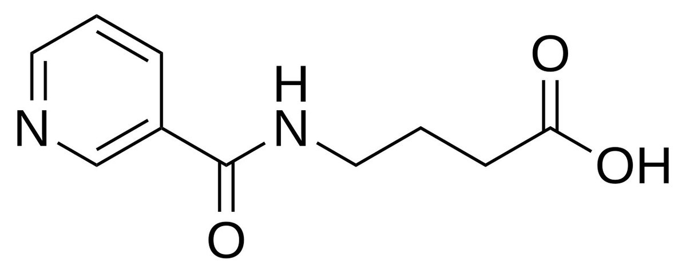
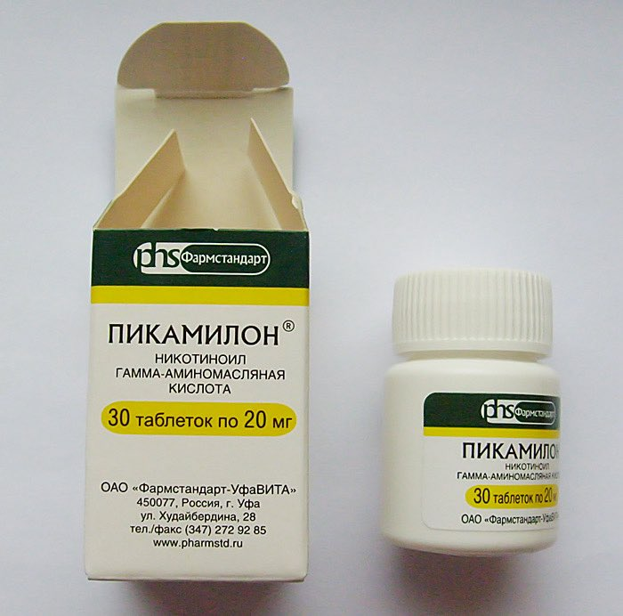

Nutilité
@Prechaska
突然意识到苏联一直有着丰富的促智药研究史，苯基吡拉西坦、Semax、Selank全是它的作品，而其对促智药的定义那么广泛，phenibut作为高压环境下维持功能的镇静类药物也被列入其中，Picamilon则同样作为其gaba系药物的一员，额外关注以扩张脑血管的方式发挥改善脑功能的效果


dowond yang
@YangDowond
给各位介绍一个社会主义制药产业的独特GABA结构产物-皮卡米隆 (Picamilon)，苏联制药产业的杰作，把烟酸（维生素 B3，强效血管扩张剂）和GABA缝合在一起，利用烟酸强大的血脑屏障穿透力，把GABA挤进大脑，它进入体内会完全水解为GABA和烟酸，它奇迹地融合了血管扩张的清醒感和GABA的轻度抗焦虑感 https://t.co/mOyJPG435m